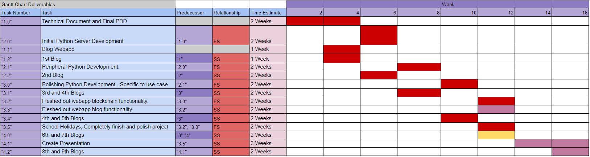

Progress Chart
Welcome to the eighth progress entry of LogiChain!
Important Updates
Since the last progress entry, here are the most pressing updates: Development on the LogiDesk is on the way, I am currently setting up the order management system.
Heres the latest gaant chart updates.

Overview
Databases
This week has so far been relatively unproductive since, even though I spent a good amount of time on LogiChain, a majority of that time was spent backtracking database code and versions, in the end, I have decided on Firebase, the JSON powered database by google.
This week also led to the realisation that LogiChain no longer has any use for XRP escrows, and will from this point forth, be using transactions.
As far as new progress goes, we can now store products on the database and product orders are on the way.
Challenges
In regard to the challenges associated with this week, I was faced with lost time due to other assessments being due and I was relatively unstable since so much time was spent trying to find the correct data base to use
Positives
Realistically, while a bunch of time was lost this week, we have left the week with a new database system which will prove to help logichain work faster and more securely. Time will also be saved in future due to the fact that escrows are no longer being pursued.
Timeline of Progress
13/10/21
Yesterday I found a GitHub repo containing all of the appropriate for creating escrows on the XRP network through python, after testing out the code for a few hours, I was happy with the outcome of the code, however, the escrow was still not valid on the network. This was due to the condition passed through the escrow, this is something that would be fixed with ease after implementing this code to LogiChain. After I made this discovery, I realised the error in my thought, that even if I manage to implement escrows, their implementation would be completely redundant.
Realistically, using an escrow for payment in an order system would mean that you would probably release the funds (or pay the sender) after the products arrive to the recipient or after a set amount of time. It is now clear to me that this is a completely unnecessary process since orders should be paid upfront, and if the order does not arrive i.e.(if it is lost or damaged in transit), then it should be at the expense of the payer or delivery driver since the sender has already sent the items.
For this reason, I will be using simple XRP transactions for order payments. If an order is incorrectly made up and sent i.e.(there are missing items) then a second transaction will be sent to the recipient to make up for this mistake. With this decided, I will now be working on a database to store item, user, event and order data instead of using JSON files. After that then I will continue work on the order system as I will need the database as a propper data storage platform.
15/10/21
Over the last few days I have been making progress towards using SQLite as my database for LogiChain, today I started integrating the SQLite python code. After speaking with my brother about the current database work, he has informed me about firebase, which is a JSON powered database platform made by google. I will be using this to facilitate the data storage for LogiChain.
18/10/21
I have now finished a large amount of the implementation of firebase, the use of this application is seamless and has already taken roughly 50 lines of code off my project.